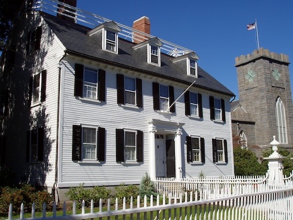

Ropes Mansion
Ropes Mansion is an eighteenth century Georgian Colonial home known for its architecture and landscaped gardens.
This historic mansion is a popular tourist attraction and offers guided tours that showcase its architectural features and historical significance.